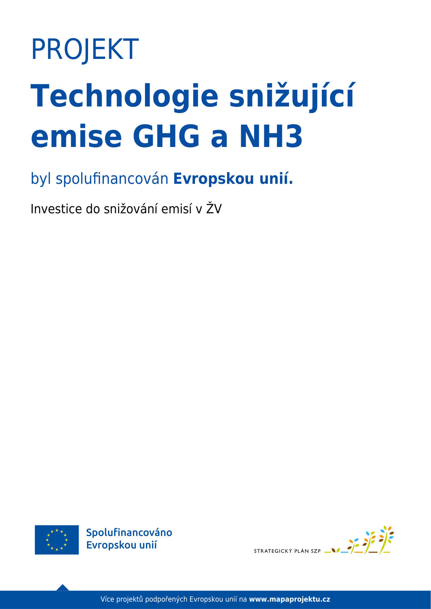

Rodinná zemědělská farma ve Středních Čechách
Statek Novák Jarpice - Kamenice je rodinnou zemědělskou farmou se sídlem ve Středních Čechách, která vedle rostlinné výroby (obiloviny, luštěniny, olejoviny, cukrová řepa, vojtěška) chová v rámci živočišné výroby cca 1000 VDJ skotu s produkcí mléka, cca 6000 ks prasat a i další hospodářská zvířata (ovce, kozy, slepice, koně).
Projekt byl spolufinancován Evropskou unií. Investice do snižování emisí v živočišné výrobě.
